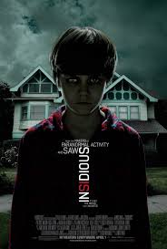
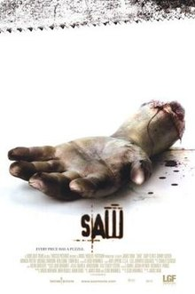
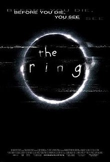
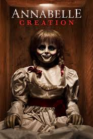

Saw franchise veterans James Wan and Leigh Whannell team with Paranormal Activity writer/director Oren Peli to give the familiar haunted house story an exciting new twist with this tale of a family that moves into an old house and begins to suspect they are under siege from otherworldly forces when their young son inexplicably falls into a deep coma. As devoted parents Josh (Patrick Wilson) and Renai (Rose Byrne) struggle in vain to uncover the root cause of their son's condition, the stress of the situation gradually begins to take its toll on their once-strong
Before there was Amityville, there was Harrisville. "The Conjuring" tells the true story of Ed and Lorraine Warren (Patrick Wilson, Vera Farmiga), world renowned paranormal investigators, who were called to help a family terrorized by a dark presence in a secluded farmhouse. Forced to confront a powerful demonic entity, the Warrens find themselves caught in the most horrifying case of their lives.

The directorial debut from filmmaker James Wan, this psychological thriller comes from the first screenplay by actor Leigh Whannell, who also stars. Whannell plays Adam, one of two men chained up in a mysterious chamber. The other, Dr. Gordon (Cary Elwes), like Adam, has no idea how either of them got there. Neither of them are led to feel optimistic by the man lying between them dead of a self-inflicted gunshot wound. Together, Adam and Dr. Gordon attempt to piece together what has happened to them and who the sadistic madman behind their imprisonment is.

It Chapter Two is a 2019 American supernatural horror film based on Stephen King's 1986 novel of the same name.Twenty-seven years after their first encounter with the terrifying Pennywise, the Losers Club have grown up and moved away, until a devastating phone call brings them back.

A couple begins to experience terrifying supernatural occurrences involving a vintage doll shortly after their home is invaded by satanic cultists.
6. The Babadook (2014)
7. It follows (2014)
8. The Autopsy of Jane Doe (2016)
9. IT (2017)
10. The Ring (2002)
11. Sinister (2012)
12. Hush (2016)
13. Get out (2017)
14. Paranormal activity (2007)
15. Scream (1996)
16. In the tall grass (2019)
17. The ritual (2017)
18. The bye bye man (2017)
19. Friend Request (2016)
20. Mama (2013)
21. Would You Rather (2013)
22. The Nun (2018)
23. The cabin in the woods (2011)